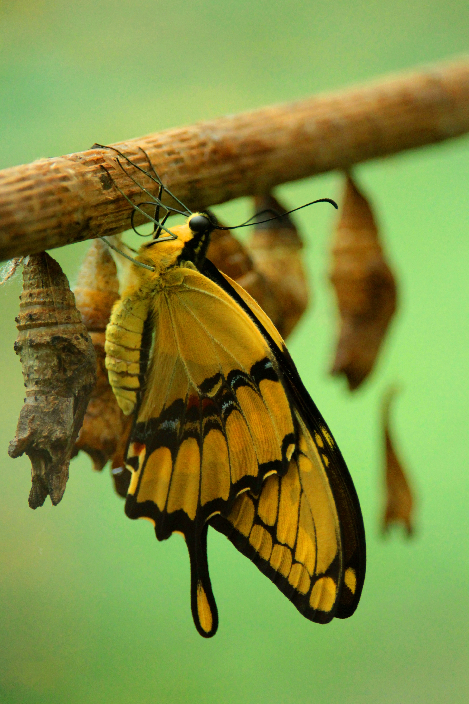
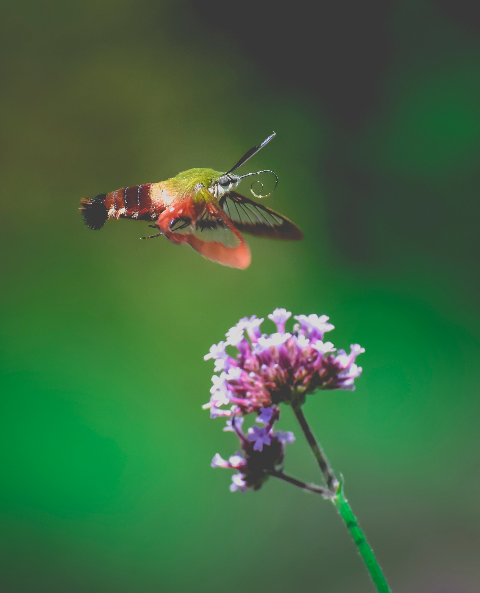
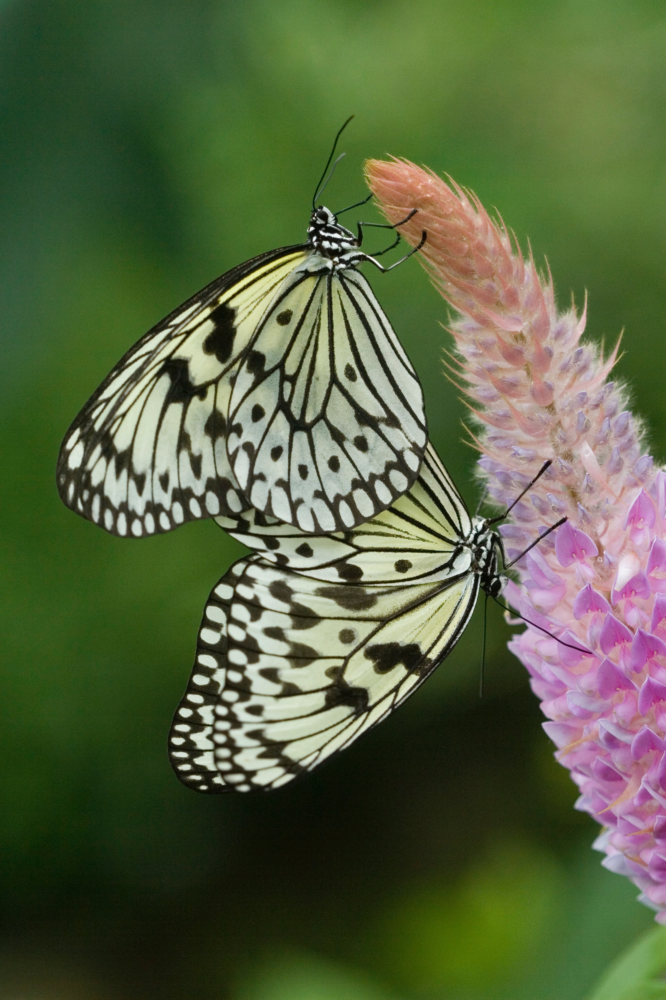
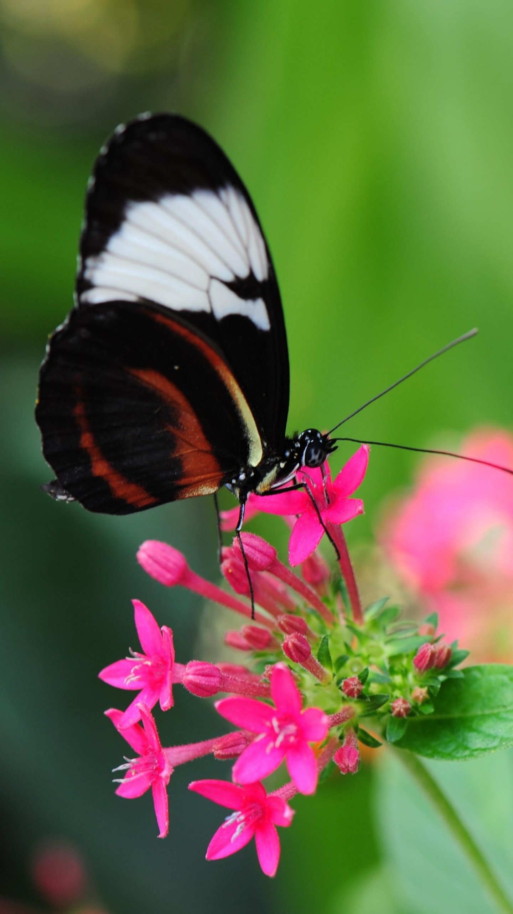

-

Butterfly Life Cycle
Butterflies go through four stages in their lifecycle - egg,larva (caterpillar), pupa (chrysalis), and adult butterfly. Female butterflies lay their eggs on plants, and when the eggs hatch, the caterpillars emerge. Caterpillars eat the leaves of plants and grow rapidly. When they are fully grown, they form a chrysalis and undergo metamorphosis, emerging as adult butterflies.
-

Migrating
Many species of butterflies migrate long distances in search of food and suitable breeding grounds. The monarch butterfly, for example, migrates up to 3,000 miles from Canada to Mexico each year. During migration, butterflies rely on a combination of visual cues, celestial navigation, and their sense of smell to find their way
-

Mating
When a male sights a potential mate it will fly closer, often behind or above the female. The male may also do a special "courtship dance" to attract the female. If the female is interested she may join the male's dance. During mating, when their bodies are joined, they are fertilized by sperm as the male sperm passes through egg-laying tube the female's oviduct.
-

Feeding
Larva or caterpillar level and adult butterfly have very different food options. Caterpillars do not move much and may spend their entire lives on the same plant or leaf. Unlike caterpillars, butterflies can wander around and search for a suitable meal in a very wide range of landscapes. Most butterflies prefer flower nectar.